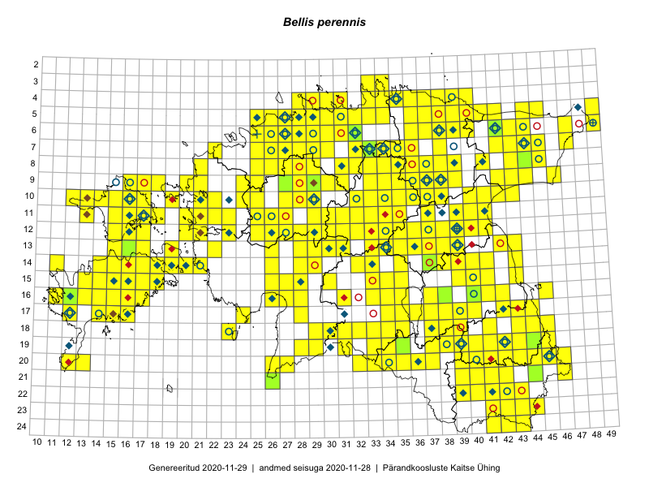

Bellis perennis
Uuendatud: 2016-12-02
Kaardile koondatud taksonid: Bellis perennis L.

Kaart põhineb 972 kirjel, neist vaatlusi 968 ja eksemplare 4. Taksonit on leitud 317 ruudust.
Kuvatud viited 20 esimesele andmebaasikirjele, ülejäänud PlutoFis
- Thea Kull: 2015-04-27: 07-45: GPS punkt
- Malle Leht: 2015-05-16: : ala
- Tiit Hallikma, Toomas Kukk, Indrek Tammekänd: 2015-06-09: 12-28: ala
- Meeli Mesipuu, Kadri Tali: 2015-04-30: 17-40: ala
- Meeli Mesipuu, Kadri Tali: 2015-04-30: 17-40: GPS punkt
- Meeli Mesipuu, Liina Oja: 2015-04-27: 08-43: ala
- Peedu Saar: 2015-05-09: 13-30: ala
- Peedu Saar, Timo Luhamäe: 2015-05-09: 12-28: ala
- Peedu Saar, Timo Luhamäe: 2015-05-09: 12-29: ala
- Peedu Saar, Timo Luhamäe: 2015-05-09: 12-29: GPS punkt
- Peedu Saar, Timo Luhamäe: 2015-05-10: 12-30: ala
- Peedu Saar, Timo Luhamäe: 2015-05-10: 12-30: GPS punkt
- Peedu Saar, Timo Luhamäe: 2015-05-10: 12-31: ala
- Peedu Saar, Timo Luhamäe: 2015-05-10: 12-32: ala
- Peedu Saar, Timo Luhamäe: 2015-05-10: 12-32: GPS punkt
- Peedu Saar, Timo Luhamäe: 2015-05-10: 12-32: GPS punkt
- Peedu Saar, Timo Luhamäe: 2015-05-11: 12-36: ala
- Peedu Saar, Timo Luhamäe: 2015-05-11: 12-36: GPS punkt
- Peedu Saar, Timo Luhamäe: 2015-05-11: 12-37: ala
- Peedu Saar, Timo Luhamäe: 2015-05-11: 12-37: GPS punkt